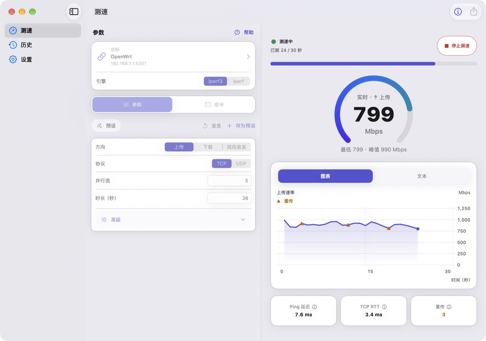

01
连接
选择你要测的对端。
输入 iPerf 地址、复用常用目标，或选择第三方公共服务器。
查看使用方法原生 iPerf 网络测试工具
用 iPerf3 与 iPerf2 测量 Wi-Fi、局域网和服务器吞吐。自己选择对端，实时查看结果，留住每一次有价值的测量。
免费下载 · Pro 可选一次性升级
在你常用的设备上，原生运行。
iPhoneiPadMacAndroid一套工具，三种开测方式
选择你真正关心的链路，掌握对端和测试参数。
看看实际界面
观察吞吐曲线、查看协议指标、对比历史结果。选择平台，点击截图即可放大。

横向滑动查看更多界面 →
截图使用演示数据，部分界面包含 Pro 功能。实际外观随设备与应用版本变化。
面向真实网络
用可重复的测量，帮助定位网络瓶颈。
家庭网络 · Wi-Fi 覆盖
固定对端和测试参数，在不同房间测量，再对比历史记录，观察吞吐变化。
局域网 · 有线网络 · NAS
在局域网中连接 iPerf 对端，排查有线、无线、路由器或服务器的吞吐瓶颈。
OpenWrt · Linux · Pro
用 SSH 编排、命令收藏和参数预设，在自己的设备上重复同一套测量流程。
Falcon Pro
免费使用核心测速功能，在需要时解锁自动编排与可复用的测试流程。
查看购买与平台说明 ↗Apple 与 Google Play 的 Pro 需分别购买。Apple 最多对比 6 条记录，Android 最多 4 条。价格以所在商店显示为准。
| 功能 | 免费 | Pro |
|---|---|---|
| 基础 TCP／UDP 测试 | 包含 | 包含 |
| 本机服务端与实时曲线 | 包含 | 包含 |
| 历史、单条导出与分享卡片 | 包含 | 包含 |
| SSH 编排与保存常用目标 | — | 包含 |
| 高级参数、命令模式与预设 | — | 包含 |
| 多条结果对比与批量导出 | — | 包含 |
需要。你可以连接兼容的 iPerf 对端、让另一台设备监听、选择第三方公共服务器，或使用 Pro 的 SSH 编排启动自己的对端。
不是。Pro 为可选的一次性应用内购买。Apple 与 Google Play 购买相互独立，恢复时请使用原商店的购买账号。
测试流量发送到你选择的对端，历史记录保存在设备本地。Falcon 无需账号，不含广告或分析追踪；商店服务与第三方对端适用各自政策。
准备好，开始测量
iPhone、iPad、Mac 或 Android，从你手边的设备开始。
iOS／iPadOS 17+ · Apple 芯片 Mac，macOS 14+ · Android 8+